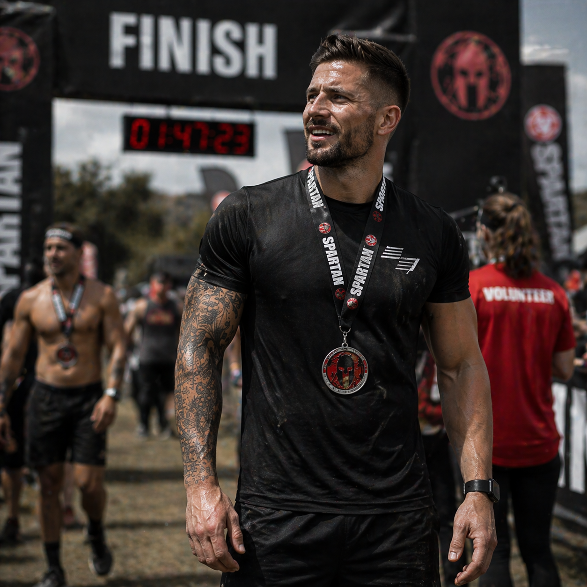
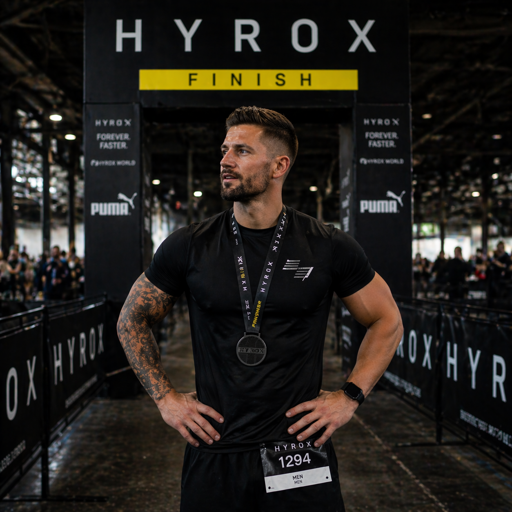
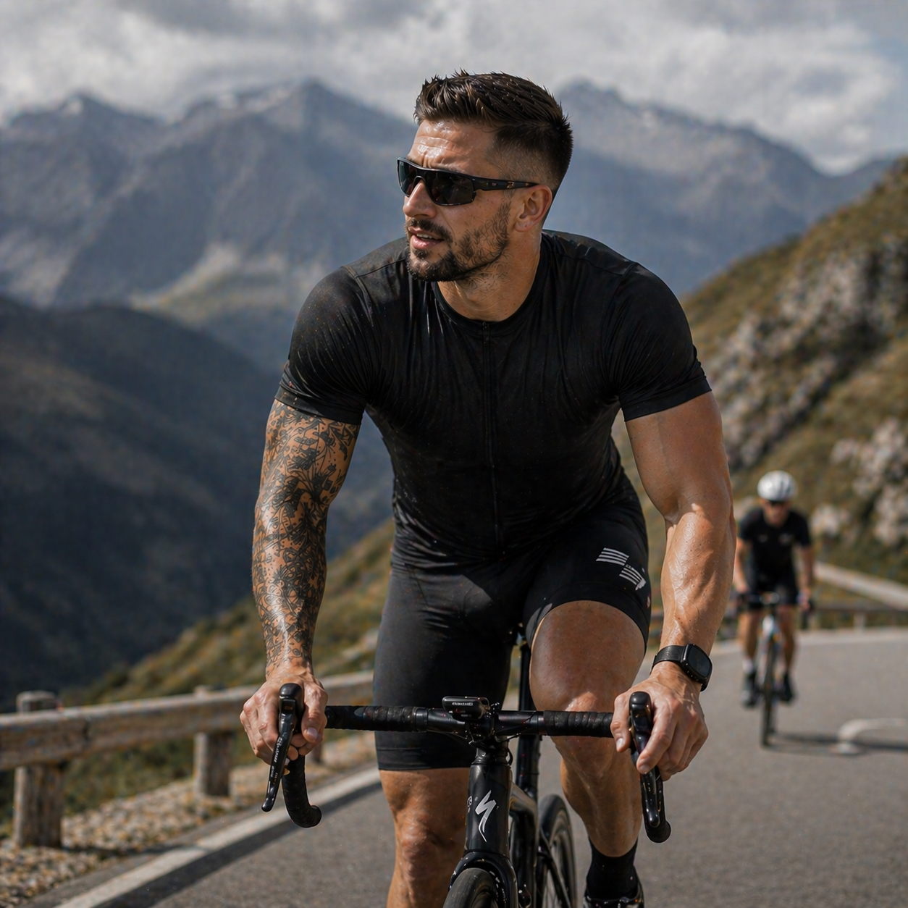
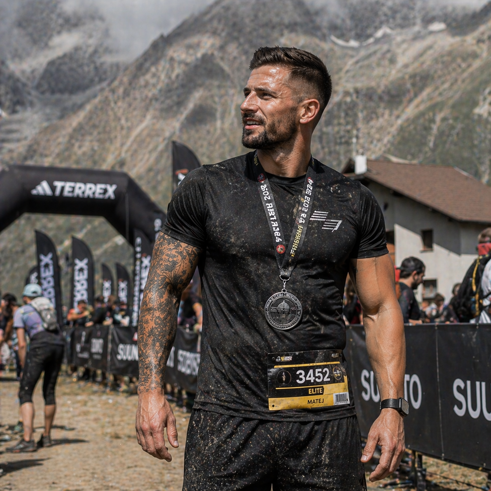

MATEJ
NOVÁK.
Nevěřím na zkratky. Věřím na systém, konzistenci a individuální přístup — protože každý člověk je jiný příběh.

Nevěřím na zkratky. Věřím na systém, konzistenci a individuální přístup — protože každý člověk je jiný příběh.
Ke cvičení mě nepřivedla touha vypadat lépe — přivedl mě sport. Závodní běh, Spartan Race, HYROX, cyklistika v Alpách. Potřeba vědět, jak z těla dostat maximum bez toho, aby se zlomilo.
Závodní číslo Elite na Spartan Beast v Alpách nebo HYROX Finish nejsou jen fotky. Jsou to roky systematické práce — tréninku, regenerace, výživy a mentální odolnosti. Všechno, co dnes předávám klientům, jsem si nejdřív sám prožil na vlastní kůži.
Po první trenérské certifikaci jsem začal pracovat s lidmi, kteří chtěli víc než jen "zhubnout do léta". Klienti s cíli — první Spartan, HYROX sub-1:30, maraton, nebo prostě vydržet s dětmi celý víkend bez zadýchání.
Každý z nich dostal jiný plán. Protože každý je jiný příběh — jiné tělo, jiný rozvrh, jiná motivace. Moje práce je pochopit ten příběh a pomoci ho posunout dál.
Dnes pracuji s více než padesáti klienty osobně i online. Závodím dál — protože věřím, že nejlepší trenér je ten, kdo sám nepřestal.
Nezajímá mě rychlá změna, která nevydrží. Budujeme návyky a systém, který funguje za 5 let stejně dobře jako dnes.
Žádné copy-paste plány. Každý klient dostane přístup na míru — podle svého těla, životního rytmu a cíle.
Sledujeme pokrok měřitelně. Co funguje, rozvíjíme. Co ne, změníme. Žádné tipování — jen systém.
Žádné hladovky, dřiny do kolapsu ani zázračné doplňky. Zdravý přístup, který zvládneš dlouhodobě bez obětí.
Jsem průvodce, ne dozorce. Pracujeme spolu — respektuji tvůj život, ty respektuješ proces.
Dokonalý trénink jednou za měsíc nestačí. Průměrný trénink každý týden po dobu roku změní vše.
Komplexní certifikace pokrývající anatomii, fyziologii zátěže, plánování tréninku a bezpečnost cvičení.
Specializace na sportovní výživu, nastavení kalorického příjmu, makronutrienty a suplementaci.
Pokročilá certifikace zaměřená na funkční pohybové vzory, silový trénink a prevenci zranění.
Certifikace první pomoci se zaměřením na sportovní prostředí, úrazy při cvičení a krizové situace.



